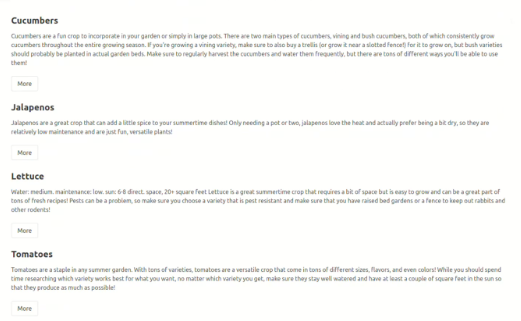
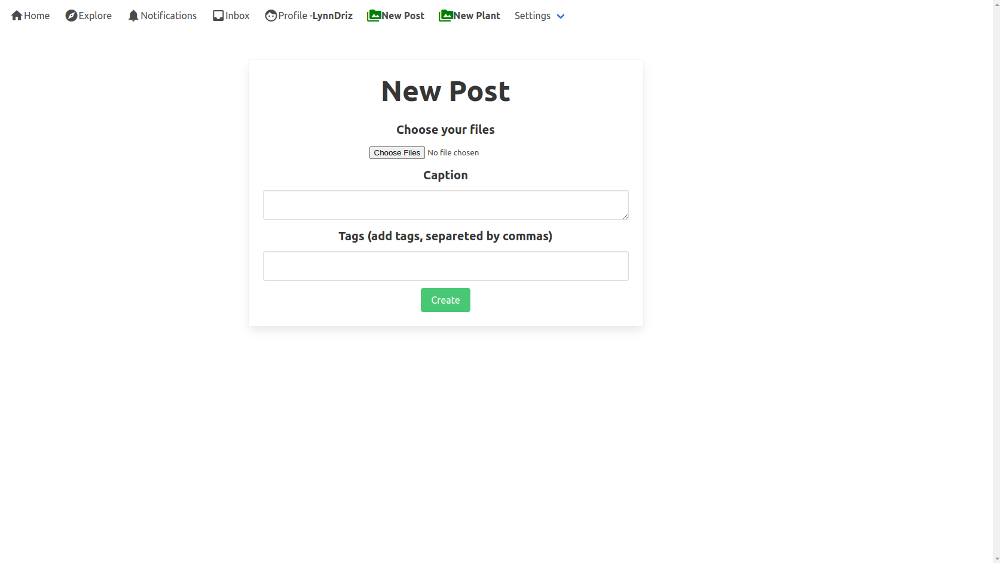
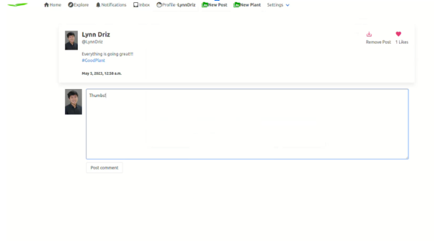
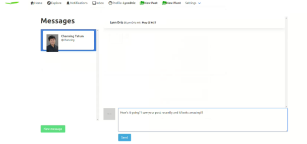
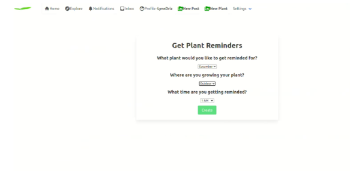

Plant Information Pages
Pages that host text information on how to plant and take care of certain plants can all
be found under the `garden-connect` folder . Each page simply displays the text with
useful tips on how to plant and take care of plants.

Posts
Post creation feature allows each user to generate posts where they can display their
garden’s progress. This feature uses “Basic Code Structure” in addition to `admin.py`,
`apps.py` and `forms.py`
`admin.py` - imports items from posting function
`apps.py` - establishes posting protocol
`forms.py` - creates a form where users can create new posts

Comment
Comment feature allows users to generate comments under other user’s posts. This feature
uses “Basic Code Structure” in addition to `admin.py` and `forms.py`
`admin.py` - registers a comment interface for Garden Connect Users
`forms.py` - creates a form where users create new comments

Direct
Direct:
Direct messaging enables users to send direct messages to each other on the app. This
feature uses “Basic Code Structure” in addition to `admin.py`
`admin.py` - registers a direct messaging interface for Garden Connect
users

Notifications
This feature generates and sends notifications to users who filled out plant interest
surveys. The notification feature uses “Basic Code Structure” described above in
addition to some additional functions such as `watering.py`, `plant_interest survey.py`
and `forms.py`
`watering.py` - generates the notification message
`plant_interest.py` - asks for user input such as what plant are they
interested in and
which hour is the best for them to receive a notification at
`forms.py` - creates a form where users create new plant reminders

Media
Contains all the media information associated with a certain user, such as posts, profile
images, etc.